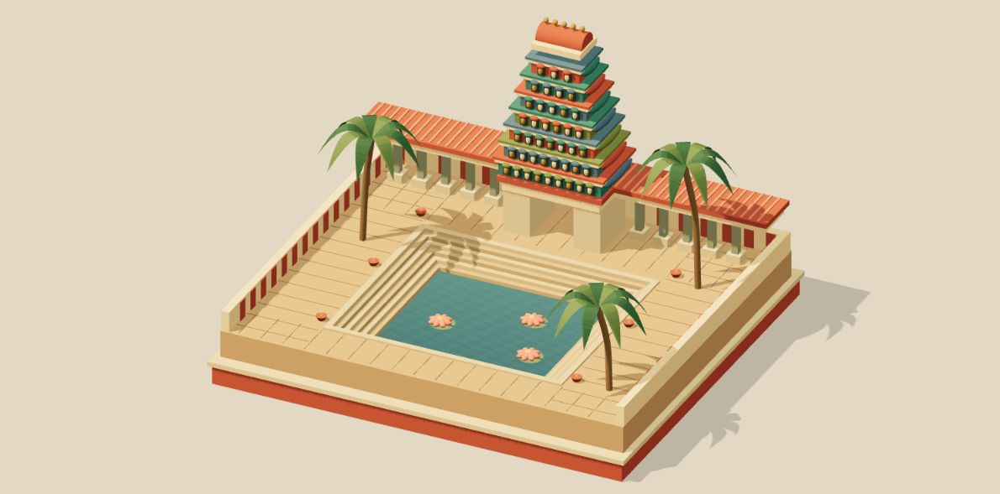
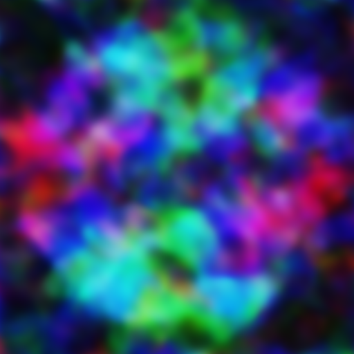

A small studio.
Studies in movement, place, and happy accidents.
Choose something to spend a moment with.
Without a word.
An eye study, inspired by Bharatanatyam.
Someone has kept her waiting.

Enable JavaScript to see the performance.
A little of home.
A courtyard imagined from Madurai.
Warm stone, still water, a moment to linger.

Drag to turn. Tap the water to float a flower. You can also focus the view and use the left and right arrow keys, or use the buttons below.
Happy accidents
Sometimes, the wrong result
is worth keeping.
My research has often produced weird art as an unintended byproduct. Frustrating in the lab; interesting enough to find a home here.
A collection of six experiments.
1 / 6
